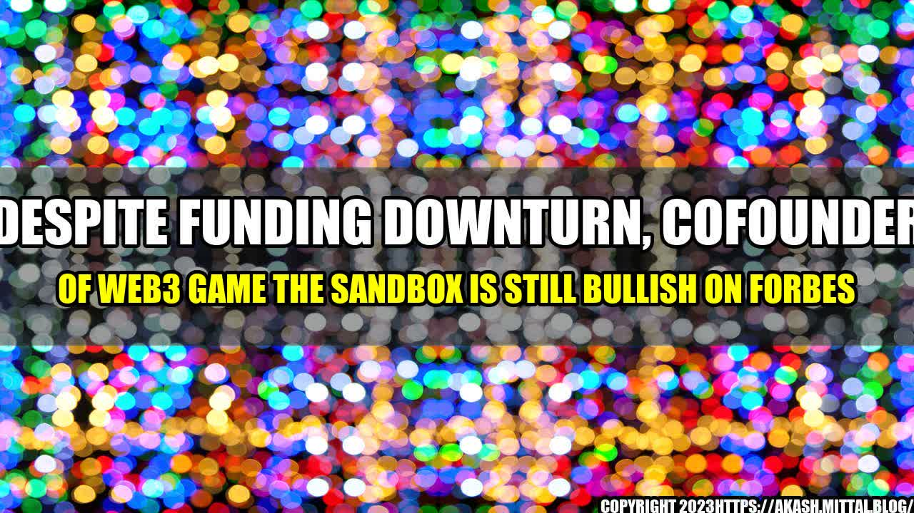

Despite Funding Downturn, Cofounder of Web3 Game The Sandbox is Still Bullish on Forbes

John Linden, co-founder of Web3 game The Sandbox, is not deterred by the recent downturn in funding for Web3 companies.
Despite having his funding round cut short, Linden remains confident in the future of The Sandbox and the potential of the Web3 space as a whole.

While the funding environment has become more challenging for Web3 companies, there are still success stories to be found.
- The Sandbox surpassed 1 billion LANDS (game assets) sold in a single day on its marketplace in August 2021.
- Web3 game Axie Infinity has seen massive growth in its user base, with over 2 million daily active users and $1 billion in sales volume in August 2021.
- The NFT market continues to thrive, with more than $2 billion in sales volume in the second quarter of 2021 alone.
Why Linden is Bullish
Linden cites three key reasons for his bullish outlook on the Web3 space:
- The growth potential is enormous. Web3 is a nascent industry with plenty of untapped potential. As more people become familiar with blockchain and crypto, the audience for Web3 applications will only continue to grow.
- The Sandbox's user engagement demonstrates the potential of the space. The Sandbox has a highly engaged community of players and creators, indicating there is a strong appetite for Web3 gaming experiences.
- The potential for Web3 to disrupt existing industries. Web3 applications could be transformative in industries such as finance, real estate, and gaming. The potential for decentralization and disintermediation is vast.
Conclusion
Linden's bullish outlook may be surprising to some given the recent funding challenges faced by Web3 companies, but he remains confident in the future of the space. Quantifiable examples such as The Sandbox's success and the growth of Axie Infinity and the NFT market suggest there is still plenty of potential in the Web3 space. The three reasons cited by Linden also demonstrate the transformative potential of Web3 applications.
- Web3 has enormous growth potential
- The Sandbox's success demonstrates the potential of the space
- Web3 has the potential to disrupt existing industries
As Web3 continues to evolve, it will be interesting to see whether Linden's bullish outlook is vindicated.
Reference urls: Forbes
Hashtags: #Web3 #TheSandbox #Funding #Bullish #Forbes
Category: Web3 Gaming and Blockchain Technology
Curated by Team Akash.Mittal.Blog
Share on Twitter Share on LinkedIn